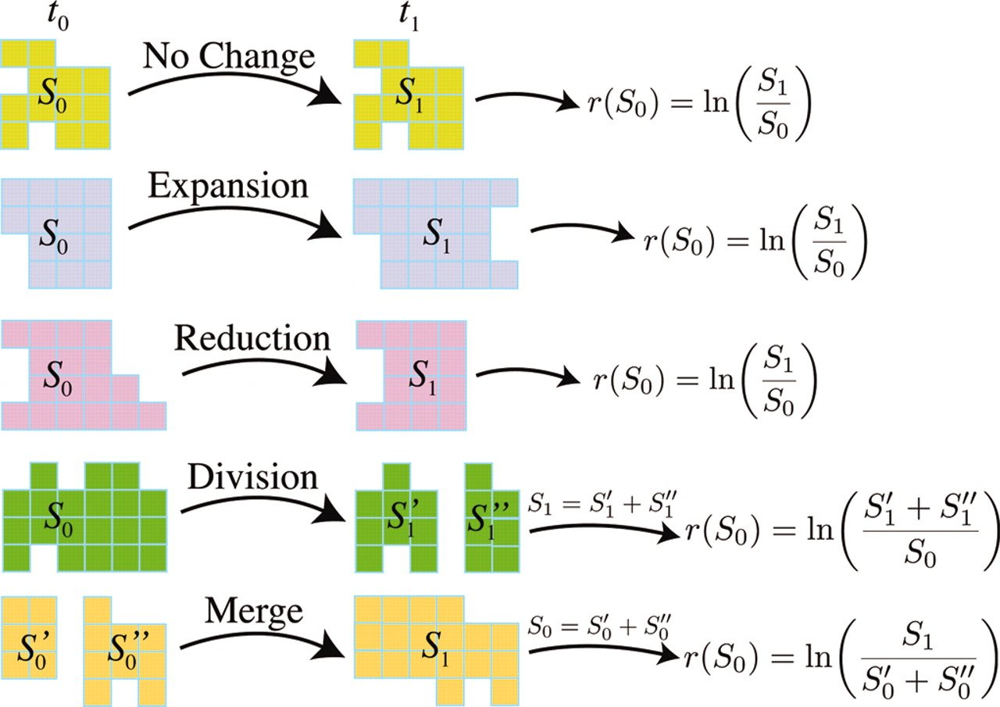

Global Human Settlement Layer cities
Procedure and Dataset
- DBSCAN (or CCA) over settlement layer data
- Match with population layer data
- Geocode with world map (extension: Nominatim API)
- All world cities with population and country
- Consistent definition of city and area
- Span over 55 years (1975-2025)
Basic questions
- What is the distribution of city sizes across the world?
- Does the population distribution of world cities follow Zipf's law?
- What is the relation between the number of cities in a country and the size of its largest city?
- Joining k small countries yields the same city distribution as a big country?
More advanced question
- Relation between Zipf's exponents and economic development
- Gibrat's law and city growth
- What happens to the city size distribution when we remove/add borders (Germany/Yugoslavia)
- Urbanization in the developing world ...
Problem: How to assign unique historical identifiers to cities?

- Crosswalk--Match cluster with intersecting clusters
- Merges and splits